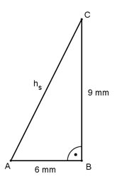

Aufgabe 315 Auf eine quadratische Pyramide mit einer Seitenlänge von 12 mm und einer Höhe von 9 mm ist mittig auf der Grundfläche eine Halbkugel mit einem Durchmesser von 12 mm aufgesetzt. Wie groß sind das Volumen V und die Oberfläche O des Körpers? Volumen = Pyramide + Halbkugel a² * h л * d³ V = --------- + ---------- 3 12 12² * 9 л * 12³ V = --------- + ---------- mm³ 3 12 V = 432 mm³ + 452,2 mm³ = 884,2 mm³ Berechnung der Pyramidenseitenhöhe hs:  Satz von Pythagoras im Dreieck ABC: hs² = AB² + BC² = 6² mm² + 9² mm² = 117 mm² |√ hs = 10,8 mm Oberfläche = Pyramidenmantel + Halbkugeloberfläche + + Pyramidengrundfläche - Halbkugelgrundkreis a * hs d² * л O = 4 * --------- + --------- + a² - л * r² 2 2 r = d/2 = 12 mm/2 = 6 mm 12 * 10,8 12² * л O = 4 * ------------- + --------- + 12² - л * 6² mm² 2 2 O = 259,2 mm² + 226,1 mm² + 144 mm² - 113 mm² = 516,3 mm²